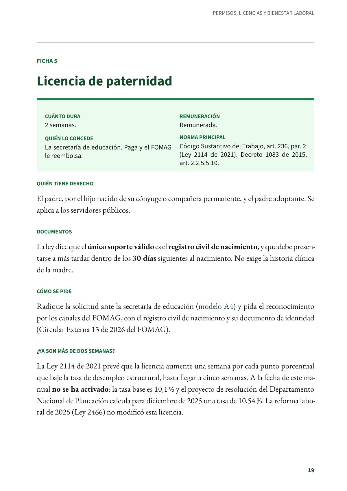
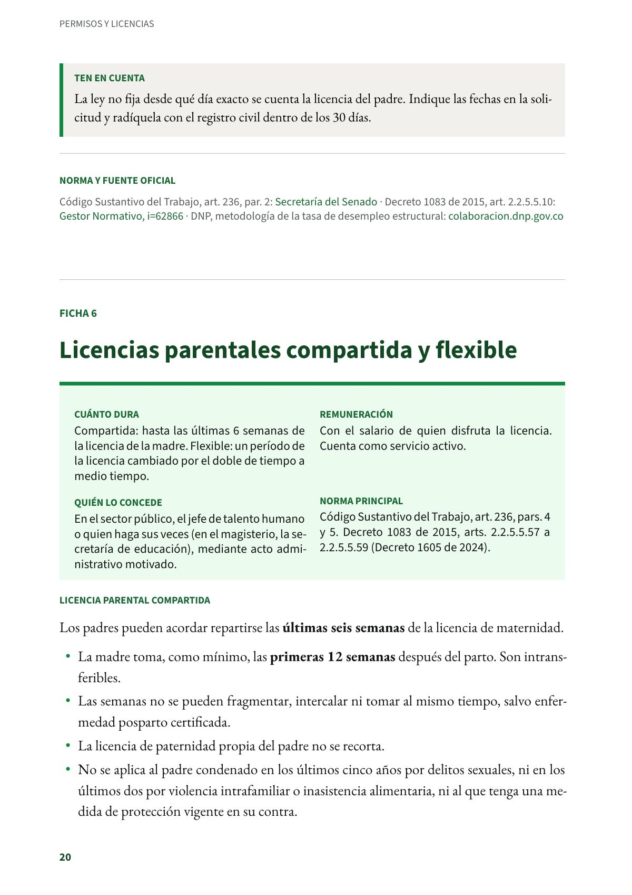

Licencia de paternidad
Dos semanas remuneradas. El único soporte que exige la ley es el registro civil de nacimiento, dentro de los 30 días.
PDF · 2 págs. · 45 KBEn resumen
- Cuánto dura: 2 semanas.
- Remuneración: Remunerada.
- Quién lo concede: La secretaría de educación. Paga y el FOMAG le reembolsa.
- Norma principal: Código Sustantivo del Trabajo, art. 236, par. 2 (Ley 2114 de 2021). Decreto 1083 de 2015, art. 2.2.5.5.10.
Quién tiene derecho
El padre, por el hijo nacido de su cónyuge o compañera permanente, y el padre adoptante. Se aplica a los servidores públicos.
Documentos
La ley dice que el único soporte válido es el registro civil de nacimiento, y que debe presentarse a más tardar dentro de los 30 días siguientes al nacimiento. No exige la historia clínica de la madre.
Cómo se pide
Radique la solicitud ante la secretaría de educación (modelo A4) y pida el reconocimiento por los canales del FOMAG, con el registro civil de nacimiento y su documento de identidad (Circular Externa 13 de 2026 del FOMAG).
¿Ya son más de dos semanas?
La Ley 2114 de 2021 prevé que la licencia aumente una semana por cada punto porcentual que baje la tasa de desempleo estructural, hasta llegar a cinco semanas. A la fecha de este manual no se ha activado: la tasa base es 10,1 % y el proyecto de resolución del Departamento Nacional de Planeación calcula para diciembre de 2025 una tasa de 10,54 %. La reforma laboral de 2025 (Ley 2466) no modificó esta licencia.
Ten en cuenta
La ley no fija desde qué día exacto se cuenta la licencia del padre. Indique las fechas en la solicitud y radíquela con el registro civil dentro de los 30 días.
Norma y fuente oficial
Código Sustantivo del Trabajo, art. 236, par. 2: Secretaría del Senado · Decreto 1083 de 2015, art. 2.2.5.5.10: Gestor Normativo · DNP, metodología de la tasa de desempleo estructural: colaboracion.dnp.gov.co
Así se ve en el libro
2 páginas
